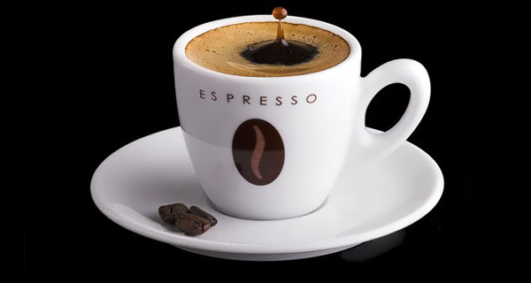
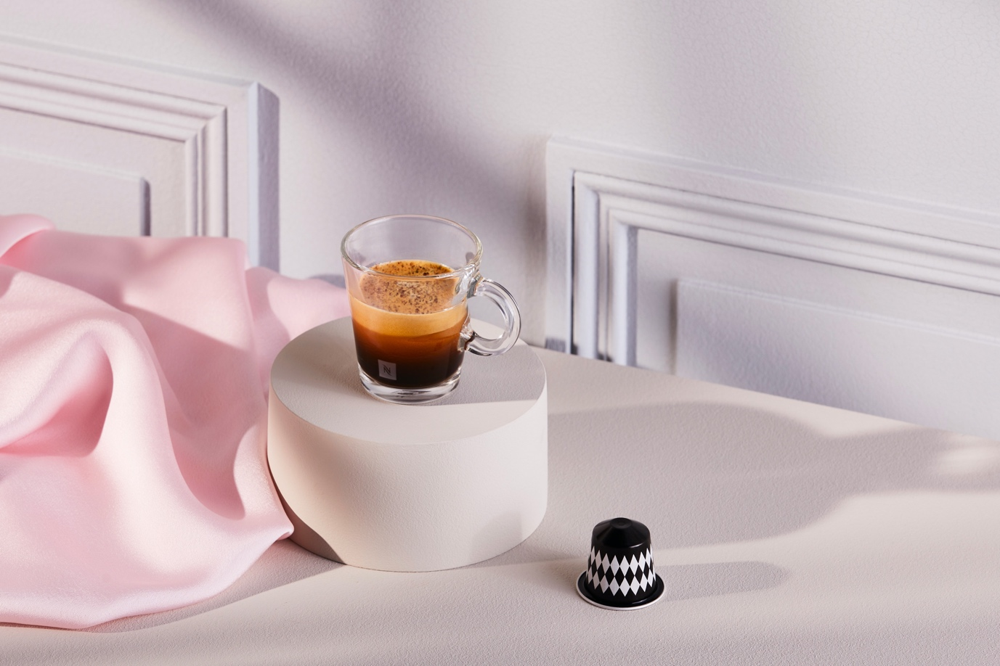

The article below Huongmai Cafe will take you to travel around the world through each cup of espresso coffee from different lands. Don't miss the article.
Make your own espresso, enjoy it at home and experience the coffee culture of different cities around the world, from Miami, Paris, Istanbul to Rio de Janeiro. That is the style of enjoying espresso that is conquering young people who have taste and love to experience interesting things.
Travel and coffee is a concept that is not too strange for coffee lovers and explorers. Each land will have its own culture of enjoying coffee, depending on the climate, lifestyle and taste of different types of coffee from different soils. Enjoying an espresso in charming Paris will never be the same as an espresso in the glamorous Istanbul, or sipping an espresso in bold Miami will be very different from when you drink espresso in vibrant Rio de Janeiro. That is why when going to each city, tourists want to enjoy coffee in that land to experience not only coffee but also the unique culture of the local people.

espresso-coffee
Now, you don't have to go to a place to enjoy a cup of espresso and discover the coffee culture of your favorite land. Coffee and travel lovers are completely captivated by the Nespresso World Explorations collection with new coffee capsules named after the cities of Miami, Paris, Rio de Janeiro and Istanbul. Inspired by the strong coffee heritage of each region, the Nespresso World Explorations range of coffees captures the coffee culture of each city through each cup of full-bodied espresso.
No need to go far, just stay at home, with the push of a button in less than 5 minutes, you will have a delicious espresso with bold characteristics of the land you love. From romantic France to bustling Turkey, each coffee capsule in the World Explorations collection will travel the world with you and enjoy coffee like the locals.
Discover the rich Cuban culture through the limited edition World Explorations Miami Espresso
Strolling along the streets of Miami, you will pass countless "ventanitas" or "small windows" that are the door to Cuba; Miniature coffee shops serving snacks and coffee - a "Cafecito" or a "Colado" to share together. A city where unique traditions converge and blend, World Explorations Miami Espresso offers a rich blend of Arabica and Robusta coffees. With a line of Caribbean Arabica coffee combined with Latin American coffees, you will feel the authenticity in every cup of original Cuban coffee.

world-explorations-through-espresso-coffee
The way you enjoy it like a local: sip a cup of black coffee (‘cafecito’) with a little brown sugar sprinkled on top.
The coffee culture of poetic France is portrayed through World Explorations Paris Espresso
Paris prides itself on having a rich coffee culture – a city where people enjoy their philosophies through every cup of coffee. World Explorations Paris Espresso takes you to flavor levels with the perfect combination of lightly roasted Latin American Arabicas and typical Vietnamese Robusta coffee. The subtle bitterness of lightly roasted Robusta coffee creates a faint cookie aroma along with cereal and citrus aromas that bring you the experience of sitting at a small Parisian cafe, sipping and drinking. Enjoy your own special cup of coffee.
How you enjoy it like a local: Sip on black coffee or a cup of "café au lait" – French latte with a few French pastries.
Paris-Espresso
Learn how to make traditional Turkish coffee in World Explorations Istanbul Espresso
World Explorations Istanbul Espresso takes you back in time to the original coffee houses with an explosive flavor of ripe wild fruit and a subtle hint of almond.
Bringing the traditional Turkish coffee flavor, World Explorations Istanbul Espresso possesses a full but equally smooth taste from the combination of Ethiopian Arabica and Indian Robusta coffee.
Istanbul-Espresso
How you enjoy it like a local: Enjoy your espresso with a glass of water and a Turkish Delight - a sweet Turkish marshmallow.
What about espresso in Vietnam? Is this drink really as popular and popular as other countries in the world? Let's discover this coffee flavor right at Huongmai Cafe.
comemnt